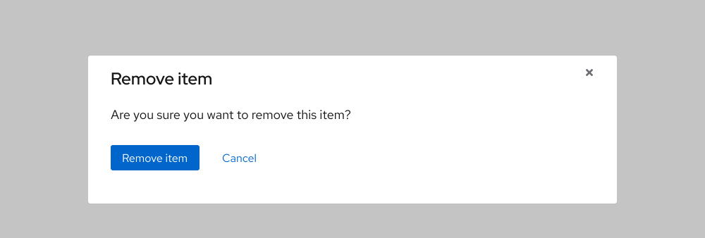

Button
A button is used to perform an action, like Submit or Delete, depending on the style. For example, use the Primary style to submit a form or the Danger style to delete something.
Action vs. navigation
Use a button only to perform an action and use a Call to action as a navigational element, like a link.
Text labels
Button text labels are written differently than call to action text labels. Button text labels should be short and clearly describe what the action is when triggered, like Download if a user wants to download something.
Disabled state
Most styles will appear disabled if an action is unavailable or if a task needs to be completed first.
Hierarchy
Buttons are ordered by hierarchy from left to right or sometimes top to bottom. Some styles can be used multiple times in the same area except for the Danger, Primary, Search, Play, and Close styles.
Grouping
Buttons can be grouped together by hierarchy from left to right or from top to bottom.Buttons can be used in modals. The Link style can be used to the right of the Primary style to create greater visual hierarchy in between the two buttons.
Modal
Buttons can be used in modals. The Link style can be used to the right of the Primary style to create greater visual hierarchy in between the two buttons.

Best practices
Don't write button text labels that are too expressive or ambiguous.
Don't use multiple Primary styles in the same area, that style is reserved to represent the one most important action.
Don’t use buttons to represent links. Use calls to action instead.
Behavior
Button vs. call to action
A button performs an action whereas a call to action directs users to another page or sometimes displays hidden content. For example, a call to action shouldn’t be used to submit a form and a button shouldn’t be used as a link.
A button can sometimes direct users to other pages, like being directed to a confirmation page after a form is submitted, but that's the result of a triggered action happening in the background. Buttons and calls to action can be used in the same area as long as the styles are used properly and perform the right functions.
Responsive design
Buttons maintain the same scale on desktop and mobile. If they stack, the alignment changes to centered and the order of hierarchy changes to top to bottom. If a button contains a background or a border, the text label stays centered if it’s really long and if it breaks to two lines, which is rare.
Interaction states
All styles have interaction states except if some styles are disabled.